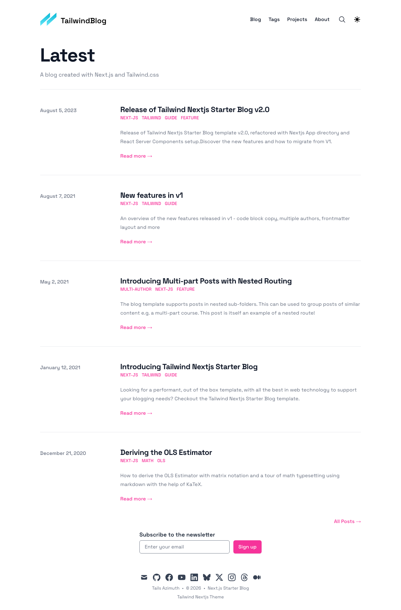

Build complet à froid
Moins est mieux · s
Next.js 15.5.12 face à Rustyx 0.1.0-alpha.1, sur tailwind-nextjs-starter-blog. Compilation, consommation serveur et coût côté navigateur sont mesurés séparément.
Apple M4 · 16 Gio · darwin/arm64 · 2026-09-24T10:51:49.304Z
1 589 666 réponses valides · 0 erreur(s) · 0 essai(s) invalide(s)
Build complet à froid : Next.js. Rebuild avec cache : Next.js.
À 250 requêtes/s sur les mêmes sept pages, la variation de RAM de Rustyx par rapport à Next est -94,6 %, celle du CPU par réponse -88,9 %. La latence p95 baisse de 59,5 %.
Sur ce blog statique, Rustyx est nettement plus économe en production. Next construit plus vite, utilise moins de CPU au build et conserve un avantage de débit sur le fichier JSON de recherche. Les temps côté navigateur sont partagés : Rustyx transfère moins de JavaScript, Next atteint DOMContentLoaded plus tôt.
Point à améliorer chez Rustyx : le corps HTML gzip moyen des sept pages pèse 24,71 Kio, contre 15,35 Kio pour Next (+61,0 %). Le gain serveur ne garantit pas un chargement plus rapide sur une connexion lente.
1 589 666 réponses valides mesurées ; 0 erreur(s) de réponse ; 0 essai(s) invalide(s).
Il n’y a pas de score global arbitraire : le meilleur choix dépend du coût de build, de la RAM disponible, du CPU par réponse et des ressources envoyées au visiteur. « Proches » signifie un écart inférieur à 3 %, sans prétendre à un test statistique de significativité.
| Mesure | Next.js | Rustyx | Avantage observé |
|---|---|---|---|
| Build complet à froid, contrôles + RSS | 9,58 s | 11,25 s | Next.js |
| Rebuild complet, caches conservés | 5,36 s | 8,93 s | Next.js |
| CPU du build complet à froid | 26,52 s CPU | 50,01 s CPU | Next.js |
| Pic RAM du build complet à froid | 2 108,52 Mio | 1 074,02 Mio | Rustyx |
| RAM serveur, sept pages à 250 req/s | 168,53 Mio | 9,03 Mio | Rustyx |
| CPU par réponse, sept pages à 250 req/s | 1,900 ms | 0,210 ms | Rustyx |
| Débit observé, sept pages / C4 | 1 884 req/s | 4 459 req/s | Rustyx |
| Latence p95, sept pages à 250 req/s | 4,190 ms | 1,696 ms | Rustyx |
| HTML gzip moyen, sept pages à 250 req/s | 15,35 Kio | 24,71 Kio | Next.js |
| JavaScript reçu à l’accueil | 218,37 Kio | 189,85 Kio | Rustyx |
| Travail du thread principal à l’accueil | 79,373 ms | 69,839 ms | Rustyx |
| DOMContentLoaded à l’accueil | 11,500 ms | 20,000 ms | Next.js |
| LCP de l’article, réseau local | 32,000 ms | 36,000 ms | Next.js |
| Fichiers de build hors cache | 10,61 Mio | 15,42 Mio | Next.js |
Les colonnes « framework » ne couvrent pas les mêmes contrôles : Next les intègre, Rustyx les exécute séparément pour la mesure complète. RSS désigne ici le flux de syndication du blog dans le total ; les pics mémoire sont indiqués en Mio.
| État des caches | Moteur | Commande framework (s) | Contrôles ajoutés (s) | Total avec RSS (s) | CPU total (s) | Pic RSS médian (Mio) |
|---|---|---|---|---|---|---|
| Vides | Next.js | 9,55 | Inclus | 9,58 | 26,52 | 2 108,52 |
| Vides | Rustyx | 8,78 | 2,44 | 11,25 | 50,01 | 1 074,02 |
| Conservés | Next.js | 5,33 | Inclus | 5,36 | 14,63 | 2 187,89 |
| Conservés | Rustyx | 8,09 | 0,81 | 8,93 | 42,42 | 759,50 |
Le cache chaud conserve les sorties et reconstruit des sources inchangées. Il ne mesure pas le temps de compilation après une modification de code.
Moins est mieux · s
Moins est mieux · s
Moins est mieux · Mio
| Charge | Moteur | Valides | RAM Mio | Pic Mio | CPU ms/rép. | CPU % cœur | Req/s | p95 ms | p99 ms | Corps Kio | CPU client % | Erreurs |
|---|---|---|---|---|---|---|---|---|---|---|---|---|
| Sept pages HTML — 250 requêtes/s imposées · C64 | Next.js | 3/3 | 168,53 | 171,58 | 1,9000 | 47,5 | 250 | 4,19 | 5,07 | 15,35 | 12,0 | 0 |
| Sept pages HTML — 250 requêtes/s imposées · C64 | Rustyx | 3/3 | 9,03 | 9,06 | 0,2100 | 5,3 | 250 | 1,70 | 2,47 | 24,71 | 18,9 | 0 |
| Sept pages HTML · C4 | Next.js | 3/3 | 188,13 | 213,61 | 1,1830 | 222,9 | 1 884 | 3,93 | 4,98 | 15,35 | 52,8 | 0 |
| Sept pages HTML · C4 | Rustyx | 3/3 | 9,33 | 9,52 | 0,0855 | 38,2 | 4 459 | 1,47 | 1,87 | 24,72 | 107,4 | 0 |
| Sept pages HTML — forte concurrence · C64 | Next.js | 3/3 | 290,63 | 312,03 | 1,1872 | 291,0 | 2 439 | 39,27 | 48,45 | 15,35 | 67,4 | 0 |
| Sept pages HTML — forte concurrence · C64 | Rustyx | 3/3 | 13,50 | 13,83 | 0,0890 | 38,6 | 4 337 | 16,75 | 28,00 | 24,72 | 107,7 | 0 |
| Accueil HTML · C4 | Next.js | 3/3 | 213,42 | 262,81 | 0,6936 | 185,7 | 2 670 | 2,22 | 3,13 | 11,61 | 53,8 | 0 |
| Accueil HTML · C4 | Rustyx | 3/3 | 9,20 | 9,25 | 0,0739 | 45,5 | 6 149 | 1,06 | 1,28 | 20,18 | 105,7 | 0 |
| Article MDX HTML · C4 | Next.js | 3/3 | 193,42 | 254,34 | 1,0012 | 204,9 | 2 047 | 2,93 | 3,69 | 16,56 | 50,5 | 0 |
| Article MDX HTML · C4 | Rustyx | 3/3 | 9,17 | 9,33 | 0,0806 | 42,5 | 5 241 | 1,29 | 1,45 | 25,35 | 105,3 | 0 |
| Article Flight/RSC · C4 | Next.js | 3/3 | 241,23 | 282,20 | 0,4628 | 223,2 | 4 823 | 1,49 | 2,20 | 10,04 | 51,8 | 0 |
| Article Flight/RSC · C4 | Rustyx | 3/3 | 9,39 | 9,48 | 0,0784 | 113,0 | 14 483 | 0,34 | 0,54 | 9,96 | 107,8 | 0 |
| Image optimisée en cache · C4 | Next.js | 3/3 | 291,38 | 302,72 | 0,0780 | 127,5 | 16 305 | 0,38 | 0,91 | 2,62 | 47,1 | 0 |
| Image optimisée en cache · C4 | Rustyx | 3/3 | 10,61 | 10,77 | 0,0171 | 75,0 | 43 945 | 0,13 | 0,22 | 2,62 | 104,3 | 0 |
| Index de recherche JSON · C4 | Next.js | 3/3 | 264,61 | 273,41 | 0,1916 | 244,5 | 12 763 | 0,51 | 1,07 | 3,35 | 73,4 | 0 |
| Index de recherche JSON · C4 | Rustyx | 3/3 | 13,72 | 14,11 | 0,1273 | 127,7 | 10 037 | 0,53 | 0,63 | 3,37 | 53,1 | 0 |
CPU ms/rép. : millisecondes CPU serveur par réponse réussie. CPU % cœur : utilisation d’un cœur. Corps : octets reçus après compression HTTP. Le pic correspond au maximum échantillonné parmi les répétitions.
| Page | Moteur | TTFB ms | DOMContentLoaded ms | LCP local ms | JS reçu Kio | JS décodé Kio | Thread principal ms | Heap JS Mio |
|---|---|---|---|---|---|---|---|---|
| / | Next.js | 1,50 | 11,50 | 44,00 | 218,37 | 713,23 | 79,37 | 5,36 |
| / | Rustyx | 0,30 | 20,00 | 32,00 | 189,85 | 556,62 | 69,84 | 4,98 |
| /blog/guide-to-using-images-in-nextjs/ | Next.js | 1,90 | 12,60 | 32,00 | 218,37 | 713,23 | 82,54 | 6,15 |
| /blog/guide-to-using-images-in-nextjs/ | Rustyx | 0,30 | 20,60 | 36,00 | 193,94 | 565,56 | 76,04 | 4,80 |
Ces mesures complètent les temps du serveur : une réponse rapide peut contenir davantage de JavaScript à télécharger et exécuter. Le navigateur dispose ici du réseau local et de la puissance du Mac M4.
| Page | Titre identique | En-têtes identiques | Texte principal identique |
|---|---|---|---|
| / | Oui | Oui | Oui |
| /blog/ | Oui | Oui | Oui |
| /tags/ | Oui | Oui | Oui |
| /projects/ | Oui | Oui | Oui |
| /about/ | Oui | Oui | Oui |
| /blog/guide-to-using-images-in-nextjs/ | Oui | Oui | Oui |
| /blog/new-features-in-v1/ | Oui | Oui | Oui |
Thème et navigation sans rechargement vérifiés pour chaque moteur. Ces contrôles ciblés ne prouvent pas une compatibilité exhaustive.

Même blog et mêmes dépendances corrigées, sources applicatives identiques (SHA-256 vérifié). Trois builds à froid et trois rebuilds sans modification par moteur ; trois répétitions de quatre secondes par charge de débit, et huit secondes à cadence imposée. Ordre des moteurs alterné pour les builds et les charges HTTP. Mesures médianes, sauf pics du tableau de charge : maximum observé.
Build à froid : sorties .next/.rustyx, cache local du framework, Contentlayer et caches des contrôles supprimés. Cache disque du système conservé ; installation npm et compilation du binaire Rust exclues. Build complet : compilation, pré-rendu, contrôles et génération du flux RSS.
Next 15.5 utilise ici webpack et réalise ses vérifications internes. Le build Rustyx brut n’effectue pas de lint ni de contrôle TypeScript. Pour la colonne « complet », ces deux vérifications sont ajoutées en parallèle, puis le même script RSS est exécuté. Le contrôle TypeScript commun désactive composite comme Next le fait dans runTypeCheck ; ce n’est pas une reproduction de tous les contrôles internes des routes Next.
Production : un seul serveur testé à la fois, processus neuf par charge, configuration de workers par défaut, 140 requêtes d’échauffement. HTTP local, keep-alive, gzip accepté ; images WebP déjà mises en cache. Corps et statuts contrôlés. La charge newsletter n’est pas mesurée : aucun fournisseur externe n’est configuré.
Comparaison à travail égal : 250 arrivées par seconde pendant huit secondes, soit 2 000 réponses par essai sur les mêmes sept pages. Au maximum 64 requêtes en vol. Le retard d’émission p95 reste inférieur à 1,1 ms pour chaque essai ; cette mesure sert de référence RAM/CPU et latence, indépendamment du débit maximal.
Ce blog sert essentiellement des pages pré-rendues. Rustyx les distribue depuis son serveur natif : aucun worker Node n’est lancé pendant les charges mesurées. Ces chiffres ne représentent pas le coût d’un site avec SSR dynamique, authentification ou requêtes externes. Les serveurs de développement déjà ouverts sont restés inactifs pendant les mesures.
RAM = somme du RSS du serveur et de ses descendants, échantillonnée environ toutes les 150 ms. Des pages partagées peuvent être comptées plusieurs fois. Le navigateur, le générateur de charge et le compilateur sont exclus de la RAM serveur. CPU serveur = variation du temps CPU cumulé via ps ; 100 % représente un cœur. Pour le build, time -l compte le CPU utilisateur + système.
Le générateur partage la machine avec le serveur. Un CPU client proche de 100 % peut limiter le débit mesuré : les résultats de forte concurrence ne prouvent pas le plafond réel du serveur. Les corps HTML/Flight ont des tailles différentes et leur coût de transfert fait partie du résultat.
Navigateur : Chromium, trois contextes neufs par page et moteur, cache désactivé, fenêtre 1280 × 900, sans limitation réseau/CPU. Ce sous-test est groupé : Next puis Rustyx. Chargements et préchargements par défaut inclus. Les temps LCP locaux ne constituent pas des Core Web Vitals mesurés chez les visiteurs. Le heap JavaScript n’est pas la RAM totale de Chromium.
Taille de build : fichiers générés hors cache, avec les précompressions produites par chaque moteur ; node_modules et public exclus. Ce n’est pas la taille totale d’un déploiement autonome. Mesures sur un seul MacBook Air M4 ; les résultats peuvent différer sur un VPS Linux.
Les essais pilotes ont révélé deux erreurs du protocole : un titre d’article attendu incorrect et une URL d’image sans le slash final exigé par la configuration Next. Les charges concernées ont été reprises pour les deux moteurs après correction. Les 21 échauffements rejetés sont archivés dans pilot-results.json ; ils ne sont pas des pannes applicatives et sont exclus des chiffres finaux.
Sources applicatives comparées : 7f1c835ce6d08c91c1f40ff4221374ee3fa526a515a877b2b466cc5acb7cbac5. Binaire Rustyx : b5b60174ab8435e9b431abf89fb6de999f727a67741eb03f7cd82e4de613ec14.
Reproduction : BLOG_BENCH_OUTPUT=reports/blog-comparison node scripts/bench-blog.mjs, avec les copies préparées dans projects/next et projects/rustyx. Les journaux de chaque build et serveur se trouvent dans ce dossier.